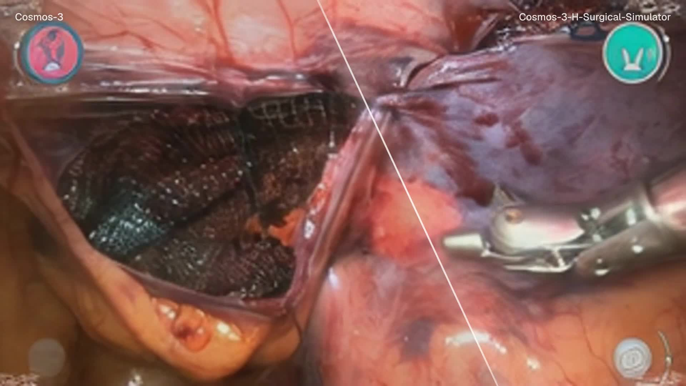
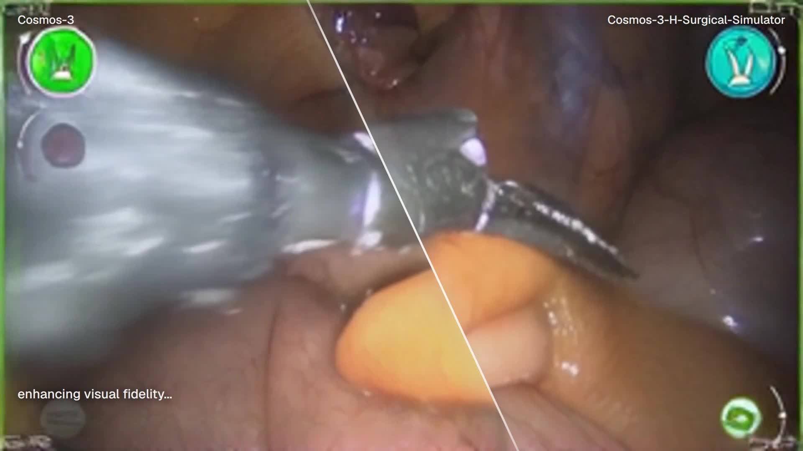
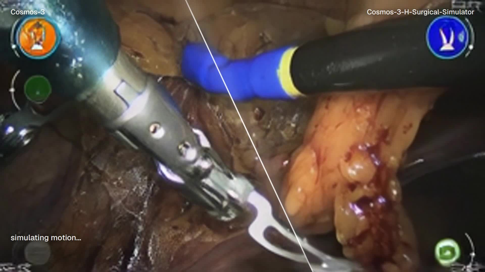
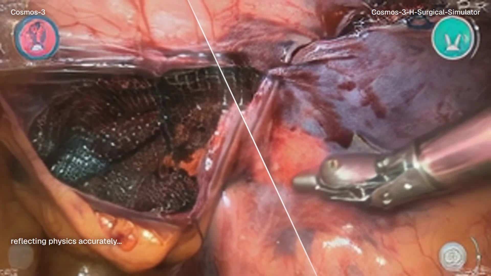
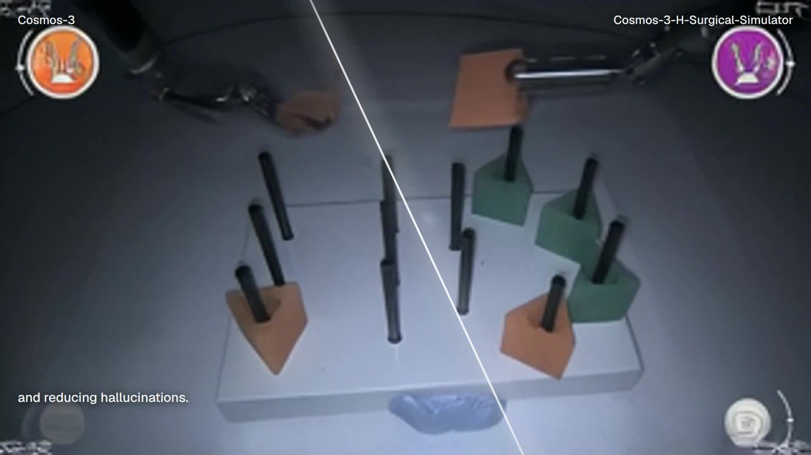

The first World Action Model of laparoscopic surgery
Cosmos3-H-Surgical-Simulator-alpha
Abstract
Surgical simulation is a central tool for laparoscopic training and robotics research because it lets a system observe the consequences of instrument motion without acting on a patient. Cosmos3-H-Surgical-Simulator-alpha models this setting directly: it conditions on an initial endoscopic frame and a 12-step robot action trajectory, then predicts the corresponding short-horizon laparoscopic video. The model is post-trained from NVIDIA Cosmos 3 Super on Open-H-Embodiment surgical robotics video-kinematics data using 8x GB200 GPUs, and is served through FlashDreams for interactive and batch inference. The Cosmos-3-H-Surgical-Simulator represents the first real time capable World Action Model for surgical action dynamics, validating the potential of WAMs to serve both as a training tool for surgical reinforcement learning (RL) environments for embodied agents in RAS and as realistic visualisers of their action-conditioned results.
Method
The model treats surgical simulation as conditional world modelling: given the present visual state and a candidate action sequence, it predicts the resulting short-horizon visual state of the surgical scene. In this setting, a World Action Model is a forward dynamics model over observations and actions, not a robot policy. The model does not choose the next surgical motion; it visualises the likely consequences of a motion supplied by a surgeon, policy, simulator, or controller.
The base model is nvidia/Cosmos3-Super, NVIDIA's
64B-parameter Cosmos 3 Super model. Cosmos 3 is an omnimodal world
foundation model for physical AI that accepts and generates
combinations of text, image, video, audio, and action trajectories. Its
Mixture-of-Transformers architecture separates an autoregressive
reasoner tower, which interprets multimodal context, from a diffusion
generator tower, which produces continuous modalities such as future
video and action-conditioned rollouts.
Cosmos3-H-Surgical-Simulator-alpha adapts this general physical-AI
backbone to laparoscopic robotic surgery by post-training it on
Open-H-Embodiment surgical video paired with robot kinematics. The
input is an RGB endoscopic frame, task metadata, and an explicit
action tensor action[12, 44]. Each action row encodes
dual-tool relative motion: left tool translation, left 6D rotation,
left jaw target, right tool translation, right 6D rotation, right jaw
target, and reserved bridge channels. The output is a 13-frame video
segment representing the scene after the action chunk.
The FlashDreams adapter prepares the first frame, writes validated JSON and NumPy
action files, constructs the Cosmos 3 input manifest, resolves the Hugging Face
checkpoint, and launches the cosmos3_super_openh_surgical_lora
experiment with regular weights and EMA disabled.
Training data and compute
Training uses Open-H-Embodiment, a healthcare robotics dataset of paired kinematics and video spanning surgical robotics, ultrasound, clinical procedure, tabletop, and simulated healthcare robotics tasks. The model is trained as a surgical forward-dynamics model from video and kinematic action trajectories.
| Base model | nvidia/Cosmos3-Super |
|---|---|
| Dataset | nvidia/PhysicalAI-Robotics-Open-H-Embodiment |
| Training hardware | 8x GB200 GPUs |
| Checkpoint | checkpoints/iter_000000060 |
| Frame staging | 512 x 288 RGB, Cosmos image size 256 |
| Sampling | 16 steps, guidance 3.0, shift 5.0 |
Qualitative comparisons

Source split: base Cosmos 3 on the left, Cosmos3-H-Surgical-Simulator-alpha on the right.

Visual fidelity: the surgical model preserves endoscopic lighting, tissue colour, and instrument material.

Motion: generated tool displacement follows the conditioned action trajectory.

Contact: local tissue appearance remains coherent around the instrument path.

Scene consistency: structured objects remain tied to the camera and action context.
FlashDreams inference
The repository registers a FlashDreams runner and two direct entry points:
cosmos3-h-surgical-run for batch inference and
cosmos3-h-surgical-webrtc for browser-controlled serving.
JSON action files are validated and preconverted to NumPy before inference.
python3 -m pip install -e ".[inference]"
export COSMOS3_ROOT=/opt/cosmos/packages/cosmos3
export WAN_VAE_PATH=/opt/cosmos/checkpoints/wan22_vae/Wan2.2_VAE.pth
export HF_TOKEN=<token>
cosmos3-h-surgical-run \
--config configs/cosmos3-super-webrtc.toml \
--cosmos3-root "$COSMOS3_ROOT" \
--project-root "$PWD" \
--image-path runs/input/first_frame.png \
--actions-path runs/input/actions.json \
--preconvert-actions-to runs/input/actions.npy \
--output-root runs/cosmos3-h-surgicalReferences
- NVIDIA. NVIDIA Cosmos.
- NVIDIA. nvidia/Cosmos3-Super.
- NVIDIA. PhysicalAI-Robotics-Open-H-Embodiment.
- NVIDIA. FlashDreams: high-performance inference and serving for interactive autoregressive video and world models.
- Seymour et al. Virtual reality training improves operating room performance.
- Grantcharov et al. Virtual reality training leads to faster adaptation to the fulcrum effect in laparoscopic surgery.
BibTeX
@misc{voncsefalvay2026cosmos3hsurgicalsimulatoralpha,
title = {Cosmos-3-H-Surgical-Simulator-alpha: An Action-Conditioned Cosmos 3 Super Fine-Tune for Surgical Robotics World Modeling},
author = {von Csefalvay, Chris},
year = {2026},
howpublished = {\url{https://huggingface.co/hcltech-robotics/cosmos3-h-surgical-simulator-alpha}},
doi = {10.57967/hf/9372},
note = {Pre-release action-conditioned fine-tune of nvidia/Cosmos3-Super on Open-H-Embodiment}
}
@misc{nvidia2026cosmos3,
title = {Cosmos 3: Omnimodal World Models for Physical AI},
author = {{NVIDIA} and Aditi and Niket Agarwal and others},
year = {2026},
eprint = {2606.02800},
archivePrefix = {arXiv},
primaryClass = {cs.CV},
doi = {10.48550/arXiv.2606.02800},
url = {https://arxiv.org/abs/2606.02800}
}
@misc{openh2026embodiment,
title = {Open-H-Embodiment: A Large-Scale Dataset for Enabling Foundation Models in Medical Robotics},
author = {{Open-H-Embodiment Consortium}},
year = {2026},
eprint = {2604.21017},
archivePrefix = {arXiv},
primaryClass = {cs.RO},
url = {https://arxiv.org/abs/2604.21017}
}